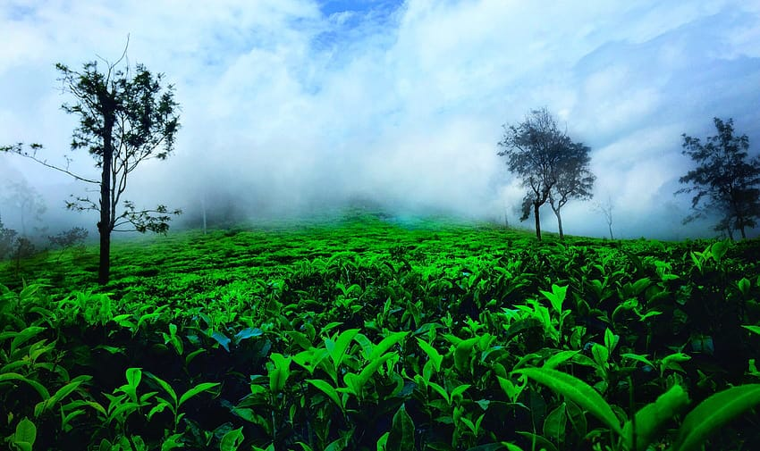

chain of misty hills spread across a lush green carpet – with plenty to see, enjoy and experience. Ooty is much more than a visitor’s paradise. It lends a piece of itself to its guests that they will be thrilled to take back. One of the most beautiful hill stations in India, Ooty nestles in the Nilgiri district of Tamil Nadu. An erstwhile summer resort of the British Raj in India, Ooty has transformed over the years into one of the most sought-after tourism destinations in Tamil Nadu.
With a cool and soothing climate almost all year round, Ooty welcomes tourists from far and wide. It’s not just about the mountains and hills, Ooty offers much more to discerning travellers who drive up the winding roads to reach the pinnacle. Lakes, gardens, parks, peaks, waterfalls and simply amazing accommodation options. No wonder Ooty is called the 'Switzerland of India', of such grandeur is the scenic beauty the destination is so well acclaimed for. If you would love to relax over a cup of tea, sitting back and gazing at the vastness of nature, Ooty is indeed the place to be.
Besides that, the Nilgiri biosphere is rich in flora and fauna, allowing you to escape into the depths of mystic jungles and explore once-in-a-lifetime experiences.
Also, you just can’t afford to miss the Toy Train ride from Mettupalayam to Ooty, which is the only daily operational meter-gauge, rack railway in India, providing you with mesmerising views of the Nilgiris.

VISITED PLACES
Government Botanical Garden
The Government Botanical Garden in Ooty, spread over 55 acres, is a mesmerizing tourist site that has been attracting visitors for years. Situated about 2400 – 2500 mts above sea level, the botanical garden was established by Marquis of Tweedale in 1897 with William Graham McIvor as the architect.
The Ooty Government Botanical Garden has a lot to offer for Nature lovers with its 600 varieties of plant species cultivated and exhibited here. The verdant lawns and the exotic varieties of flora are pleasing to the eye because they are very well maintained by the Tamil Nadu Horticulture Department. The mighty Doddabetta peak can be viewed from the garden.
Some of the enticing attractions here are the Cork tree, which is probably one of the very few of its kind in India, the paperbark tree, monkey puzzle tree, the majestic 20-million-year-old fossil tree trunk and the Toda mund or Toda hill.
Ooty Lake
The picturesque Ooty Lake, also known as the Ooty boat house, is a much sought-after tourist attraction located in the midst of serene greenery. The Ooty Lake is an artificially constructed lake, built by John Sullivan in 1824.
Surrounded by the majestically-tall eucalyptus trees and dotted with green bushes along the shores, the Ooty Lake is an impressive spot in Nilgiris district. The Lake, spanning over 65 acres, was originally constructed for fishing. It was later transformed into a tourist park when the Tamil Nadu Tourism Development Corporation took over it in 1973.
There is also a garden, a mini train and an amusement park nearby. The amusement park has fun activities like a haunted house, a mirror house and horse riding, and ensures an exciting experience for children.